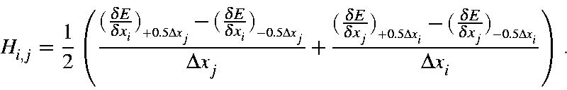

Back to Vibrational Relationships - Derivation
A nitrogen molecule, N2, provides a good, simple, quantitative introduction to molecular vibration quantities. The MNDO method will be used mainly because it is very old and stable, and all the steps described here can be reproduced using any copy of MOPAC. Several different quantities will be used in this example. To assist in conversions, a set of conversion factors are useful.
The starting point will be the N2 molecule at its equilibrium distance, 1.1038 Ångstroms.
The following dataset was used as the source for many of the numbers mentioned here. Keywords DFORCE, FMAT, LARGE, NOSYM, and NOREOR were used in order to provide expanded output, normally only FORCE would be used.
DFORCE MNDO FMAT LARGE NOSYM NOREOR Calculate the vibrational frequency of N2 N 0.00000000 +0 0.00000000 +0 0.00000000 +0 N 1.10380157 +1 0.00000000 +0 0.00000000 +0
Hessian matrices for vibrational calculations are constructed using the gradients of the displaced Cartesian coordinates for each atom, and the following expression, for a description of how this is constructed, see Hessian matrix.

In this equation, Δxi = Δxj = 0.00833333 Å. This step-size was selected automatically, and similar step-size would work just as well. Only one matrix element, H(1,4), is important, this represents the N-N stretch along the "X" axis.
Four gradients are present in this equation, their values for Hessian element H(1,4) are:
| Gradient | Dist. N-N (Å) | Gradient (kcal mol-1 Å-1) | |
| 1 | (dE/dx1)@(+0.5Δx4) | 1.10796823 | -18.292733 |
| 2 | (dE/dx1)@(-0.5Δx4) | 1.09963491 | +18.832255 |
| 3 | (dE/dx4)@(+0.5Δx1) | 1.09963491 | -18.832815 |
| 4 | (dE/dx4)@(-0.5Δx1) | 1.10796823 | +18.292156 |
Ideally, gradients 1 and 4 should be the same, as should gradients 2 and 3, but because of numerical imprecision there are small differences. A 30% reduction in numerical imprecision can be achieved by averaging gradients 1 and 4, and 2 and 3.
Matrix element H(1,4) can then be calculated using these gradients, giving H(1,4) = -4455.175 kcal x mol-1 x Å-2
Converting the Hessian from (kcal mol-1 Å-2) to (millidynes Å-1) involves multiplying the Hessian by a factor. This factor can be expressed variously as:
| Factor | = (J m-1 to millidynes) (kcal to Joules)/((Å to m)(Mole to molecule)) |
| = (108)(4184)/((10-10)(6.022
x 1023)) = 6.9477 x 10-3 |
When this is done, the matrix element becomes H(1,4) = -4455.175 x 6.9477 x 10-3 = -30.9520 millidynes x Å-1
The final step in preparing the matrix for diagonalization involves mass-weighting. This operation is straightforward:
For all matrix elements:
| Hi,jm | = Hi,j x (Mi x Mj)-½ millidynes x Å-1 x amu-1 |
Nitrogen atoms have a mass of Mi = 14.0067 amu, so matrix element H(1,4) is:
| H1,4m | = -30.9520*(14.0067*14.0067)-½ |
| = -2.20980 millidynes x Å-1 x amu-1 |
When the mass-weighted Hessian is diagonalized, the result is a set of eigenvalues, εi, and associate eigenvectors, ψi. The eigenvectors are the coefficients of the wave-function that represents the normal modes of vibration, and form an orthonormal set. The eigenvalues represent the force constants for the modes divided by the effective mass. Nitrogen has only one non-trivial vibration, so:
| Eigenvalue ε1 of mass-weighted Hessian | |
| ε1 | = 4.4196 millidynes x Å-1 x amu-1 |
and the eigenvector: ψ1 is (0.7071) x (N1(x) - N2(x)). This represents the N - N stretch mode.
Eigenvalues, εi, of the mass-weighted Hessian are related to the force-constant, ki, and reduced mass, μi, for a normal mode of vibration by:
εi = ki/μi
Given the normal mode eigenvector, the reduced mass for the vibration can be calculated from:
μi = ΣA((ψi(A)(x))2 + (ψi(A)(y))2 + (ψi(A)(z))2)2 MA amu
where "A" refers to atom A, and "x", "y", and "z" refer to the respective Cartesian coordinate of atom "A".
For the vibration in N2, this sum is:
| μ1 | = ((0.7071)2)2 x 14.0067 + ((-0.7071)2)2 x 14.0067 |
| = 7.00335 amu | |
| = 1.16294 x 10-23 g |
Given ε1 and μ1, the force constant, k1 is:
| k1 | = 4.4196 x 7.00335 millidynes x Å-1 x amu-1 x amu |
| = 30.952 millidynes x Å-1 | |
| = 30.952 x 105 dynes x cm-1 |
The eigenvalues are then converted into vibrational frequencies, νi, in cm-1 via:
| νi | = 1/(2πc) x (N x 105 x ε)½ |
| = 1/(2 x 3.1416 x 2.9979 x 1010) x (6.022
x 1028 x 4.4196)½ |
|
| = 1.3028 x 103 x εi½ | |
| = 2738.8 cm-1 |
Here, "c" is the speed of light in centimeters per second, N is in moles, and ε is in millidynes x Å-1 x amu-1
The period for a molecular vibration is normally given in femtoseconds, fs; one femtosecond is 10-15 of a second. The conversion from wavenumber to period is given by:
| T | = 1015 /( c x ν) |
| = 1015 / (2.9979 x 1010 x 2738.8) | |
| = 12.179 fs | |
| = 12.179 x 10-15 s |
Angular frequency is the angular displacement per second, or 2π/T:
| ω | = 2 x 3.1416/(12.179 x 10-15) |
| = 5.1589 x 1014 s-1 |
| ν1 (kcal mol-1) | = ν1(cm-1) x N x h x c x (ergs per kcal)-1 |
| = 2738.8 x 6.022 x 1023 x 6.626 x 10-27 x 2.9979 x 1010 x (4.184 x 1010) -1 | |
| = 2738.8 x 2.859 x 10-3 | |
| = 7.830 kcal x mol-1 |
| ν1 | (erg)= (ν1(cm-1) x h x c) |
| = 2738.8 x 6.626 x 10-27 x 2.9979 x 1010 | |
| = 2738.8 x 1.9864 x 10-16 | |
| = 5.4404 x 10-13 erg | |
| = 5.4404 x 10-20 J |
The zero-point energy of a polyatomic molecule is the sum of the zero-point energies of all its normal modes. The zero-point energy of a normal mode is half of its vibrational energy. For N2, the vibration of 2738.8 cm-1, corresponds to an energy of 7.83 kcal mol-1, so its zero-point energy is 3.915 kcal mol-1.
The starting point for this operation is the familiar E = ½mv2.
For this operation, the cgs system will be used. Rearranging E = ½mv2
gives the velocity, v = (2E/m)½. At this point, E is the energy in
ergs per mole, and "m" is the reduced mass of the vibration in amu. These
quantities can be re-worded as ergs per molecule and reduced mass in grams.
Expanding and solving for the velocity gives:
| v | = (2E/m)½ |
| = (2 x (4.184 x 1010 x ν1) x μ1-1)½ | |
| = (2 x (4.184 x 1010 x 7.830 x 7.00335-1)½ | |
| = 3.0587 x 105 cm x s-1 |
This velocity can be split into velocity per atom, vA, using the vibrational wavefunction, ψi. First, the wavefunction must be re-normalized so that the total motion is 1.0 Ångstroms. This is done by dividing the coefficients for each atom by the square-root of the atomic mass:
ψiA' = ψiA x mA-½
Then re-normalizing using a normalization factor N,
N = (ΣA (ψiA'(x)2 + ψiA'(y)2 + ψiA'(z)2 )½)-1
to give:
ψi" = N x ψi'
Finally, the starting velocity of each atom can be calculated from:
vA = v x ψi"(A)
For nitrogen, the wavefunction from the mass-weighted Hessian was ψ1 = 0.7071 x N1(x) - 0.7071 x N2(x). After re-normalizing, this becomes ψ1" = 0.5 x N1(x) - 0.5 x N2(x), and the velocity of each atom becomes:
v1 = 1.52935 x 105 cm x sec-1
and
v2 = -1.52935 x 105 cm x sec-1
in the "x" direction. This calculation is a bit tedious, but an easier way to obtain the same result is to examine the output file from a DRC calculation.
In a molecular vibration the system starts at the energy minimum, then each atom moves along a path defined by the normal mode eigenvector. At the turning point - the point where atomic motion stops - the sum of the distances that the atoms are from their original position is the travel distance. In the case of the N2 molecule, this is the distance from N1 to its equilibrium position plus the distance of N2 from its equilibrium position. This quantity can also be calculated using the energy of the vibration and the force constant for the mode. The cgi system is used in this calculation:
| ν1 | = ½ k Δx12 |
| Δx1 | = (2ν1/k1)½ |
| = (2 x 5.4405 x 10-13 x (30.952 x 105)-1)½ | |
| = (3.5154 x 10-19)½ | |
| = 0.5929 x 10-9 cm | |
| = 0.05929 Å |
The travel can be partitioned into contributions from individual atoms using the same strategy as that used in the previous section on velocity, but a faster way to obtain the same result is to examine the output file from a DRC calculation. At 2.9 fs, the movement of the atoms totals 0.0564 Å, and at 9.0 fs the movement is 0.0627 Å, for an average of 0.05955 Å. Averaging needs to be done because the Morse curve is slightly non-parabolic.
Acceleration is at a maximum at the turning point of the energy in a molecular vibration. At that point, the geometry is at its maximum distortion from the equilibrium. Assuming simple harmonic motion, then the acceleration, a, is given by:
a = -(2πf)2x
where f = frequency in hertz. = 1/(12.17 *10-15) = 8.22 x 1013 hertz, and x, the travel or distance from the geometry at the energy minimum, is a = 0.05929 Å = 5.929 x 10-10 cm. Solving this gives:
a = 2.667 x 1023 x 5.929 x 10-10 cm x s-2 = 1.581 x 1014 cm x s-2
This acceleration can be compared with the acceleration due to gravity. 1G = 9.807 x 102 cm x s-2, therefore the maximum acceleration is 1.612 x 1011 G
Because the nitrogen molecule does not have a vibrational transition dipole, the example system used was changed to HCl, a molecule that does have a dipole moment.
Keyword PRECISE is used here to minimize errors that arise when the default precision is used. PRECISE should not be used for routine use.
MNDO FORCE PRECISE Calculate the vibrational transition dipole in hydrogen chloride H 0.00000000 +0 0.00000000 +0 0.00000000 +0 Cl 1.34818168 +1 0.00000000 +0 0.00000000 +0
Conventional derivation
Evaluating a vibrational transition dipole using conventional quantum chemical methods involves some conceptually difficult steps. For example, an exact description of the wavefunction for the ground vibrational state, ψ0 is not easy to define. The quantum theoretical derivation for the transition dipole starts with the standard expression:
μi = ∫ψ0 μ ψi dτ = ⟨ψ0 | μ | ψi ⟩
Here, μi is the transition dipole, ψ0 is the ground vibrational state, that is, the state where the atoms are stationary (in the classical description) or in the zero-point energy wavefunction (quantum mechanical description). μ is the dipole operator μ = ΣA qArA, where qA is the partial atomic charge and rA is the coordinate of atom "A" There are other components to atomic dipoles, specifically the atomic orbital hybrid contributions. Although these other quantities are included, they will be ignored in this analysis. ψi is a normal mode vibrational state. For a non-linear polyatomic molecule there are 3N-6 normal modes, where N is the number of atoms in the system. The integration is over all space.
Classical derivation
An alternative, and simpler, derivation of an expression for the transition dipole is to use a classical, i.e., non-quantum-mechanical description. Classically, in the ground state of a system, all the atoms are stationary, i.e., not moving. In a vibrational state the atoms are moving, undergoing simple harmonic motion. In this motion, the atoms are initially at their equilibrium positions, but are traveling at their maximum velocity. At they move further and further from their equilibrium position, up the potential slope, their velocity decreases until the atoms all simultaneously come to a halt, i.e., all motion stops for an instant. Their paths then reverse, taking all the atoms back to their equilibrium position, and up the other side of the potential well. All the atoms again stop for an instant, then they reverse direction and return to the equilibrium position. This entire sequence can seen in an animation.
All atoms in a polyatomic molecule in its ground state are stationary. When the molecule absorbs a photon it is photoexcited into a vibrational state. The transition dipole can then be described in terms of the change in dipole in going from the ground-state geometry to the geometry in the vibrational state. This is the quantity that needs to be calculated. Two steps are involved:
Calculation of the derivative of the dipole moment with respect to geometry: Dipole moments have three components: μ(x), μ(y), and μ(z). Each component can be calculated from the contributions from each atom, "A", using:
μ(x) = ΣAμ(x)A
There are three Cartesian directions, so each component has three derivatives, for μ(x) these would be dμ(x)/dx, dμ(x)/dy, and dμ(x)/dz. There would be equivalent derivatives for μ(y) and μ(y). Analytical derivatives are very difficult to calculate, so finite difference derivatives are used. These can be represented by expressions of the type:
Δμ(x,y)A = δμ(x)A/δy
So the total derivative of the dipole moment is:
Δμ(x,y) = ΣA(Δμ(x,y)A
Evaluation of the individual components of these derivatives is done at the same time as the Hessian matrix is constructed.
Δμ(x,y)A = δμA/δy = ½(μ(x)A@R0-y - μ(x)A@R0+y)/Δy,
where "@R0-y" and "@R0+y" should be read as "at the geometry R0 but with the "y" coordinate of atom A decremented by Δy" and "at the geometry R0 but with the "y" coordinate of atom A incremented by Δy" The size of Δy is defined in the construction of the Hessian.
Conversion of a normal mode into terms of velocities or movements: Normal modes of vibration, ψ, are mass-weighted, so before they can be used for calculating the transition dipole they must be converted into non-mass-weighted vectors, ψ'. This is done using:
ψ'(Ax) = (ZA)-½ψ(Ax)
Where "A" refers to atom A, "ZA" is the atomic weight in amu of atom A, and "x" refers to the x component of motion of atom A. There are equivalent motions in the y and z directions.
ψ' needs to be re-normalized so that the total movement of all the atoms is 1.0 Å. This normalization is essentially the same as those involving wavefunctions. The normalization constant, N, is calculated from:
N = 1/(ΣA(ψ'(Ax)2 +ψ'(Ay)2 + ψ'(Az)2))½
ψ' can then be re-normalized using ψ" = Nψ'.
At this point, the derivatives are in Debye per Ångstrom and the normal mode is a vector of length 1.0 Ångstroms, so the transition dipole, Tμ(x), can now be calculated:
Tμ(x) = ΣλΔμ(λ,x) · ψ"(λ)
where "λ" indicates "the appropriate term in the vector", and finally the total transition dipole can now be defined:
Tμ = (Tμ(x)2 + Tμ(y)2 + Tμ(z)2)½
As with N2, HCl has only one non-trivial vibrational mode, this is the H-Cl stretch. Examination of the output shows that the normal mode of vibration, ψ1(R), is (0.9861 H(x) - 0.1663 Cl(x)) This vibration must first be converted from the mass-weighted normal mode into the non-mass-weighted form by dividing each coefficient by the square root of the atomic mass. Because the units of transition dipole are Debye, the "length" of the vector must be one Ångstrom, to match the units of Δμ. The steps involved are:
Remove mass-weighting:
0.9861/(1.0079)½ = 0.9824
-0.1663/(35.453)½ = -0.0276
Re-normalize to one Ångstrom:
N = 1/(0.98242 + 0.02792)½ = 1.0175
N x 0.9824 = 0.9996
N x 0.0276 = 0.0281
As a result of this operation, the non-mass-weighted normalized vibrational wavefunction is ψ" = (0.9996·H(x) - 0.0281·Cl(x)). Note that in the output the normalization used for the non-mass-weighted vibrational mode ensures that the total atomic motion is 1.0 Å. This is slightly different to the renormalization used in this analysis.
| Values of Δμ(σ,λ)A for HCl | ||||
| λ = | 1 | 2 | 3 | |
| λ = | x | y | z | |
| σ | ||||
| 1 = H(x) | 1.11410 | 0.0000 | 0.0000 | |
| 2 = H(y) | 0.0000 | 0.5480 | 0.0000 | |
| 3 = H(z) | 0.0000 | 0.0000 | 0.5480 | |
| 4 = Cl(x) | -1.1141 | 0.0000 | 0.0000 | |
| 5 = Cl(y) | 0.0000 | -0.5480 | 0.0000 | |
| 6 = Cl(z) | 0.0000 | 0.0000 | -0.5480 | |
Within MOPAC, the helper function Δμ(*,*) is a simple two-dimensional array named deldip, of size (3*N, 3), where N is the number of atoms, for HCl, deldip has the size (6,3). Deldip(4,1) has the value -1.1141, and represents the derivative of the "x" coordinate of atom 2, the chlorine atom, with respect to the "x" direction. Elements of this array are calculated at the same time as the elements of the Hessian matrix. Only two elements, deldip(1,1) and deldip(4,1), are significant, the other non-zero elements, e.g. deldip(2,2), have finite values because of a finite step-sizes being used. These unwanted matrix elements can be ignored.
The units of Δμ are Debye per Ångstrom.
Both parts needed for the calculation of Tμ, ψ" and Δμ, have now been assembled, so all that remains is to multiply them together:
| Tμ(x) | = Δμ(1,1)*ψ"(1) + Δμ(4,1)*ψ"(2) |
| = 1.1141*0.9996 +(-1.1141*(-0.0281) | |
| Tμ(x) | = 1.1450 Debye |
| The other derivatives are zero: | |
| Tμ(y) | = 0.0000 |
| Tμ(z) | = 0.0000 |
| Giving a final total of: | |
| Tμ | = (Tμ(x)2 + Tμ(y)2 + Tμ(z)2)½ |
| = 1.1450 Debye | |
An animation of a single complete vibration of the N-N stretch normal mode and the output can be used in verifying many of the calculations shown here.
To reproduce this cycle, use the following data-set:
IRC=1 DRC T-priority large bigcycles=1 mndo HTML N2 one complete vibrational cycle (To see N-N distance, click on "Script" at the bottom.) N N 1.10380157 1Notes
The step-size used in this animation is 0.1 femtosecond or 1 x10-16 s.
Small differences can be seen when the calculated results and the equivalent
results obtained from the animation or output are compared. Some of these
are due to round-off, and some are due to the difference between simple harmonic
motion and the calculated trajectory, but in general the agreement is very good,
indicating that the trajectory was almost simple harmonic.
|
Comparison of Quantities calculated here with those in the animation or output |
||||
| Quantity | Units | Calc'd | Animation and output | |
| Period of oscillation | femtoseconds | 12.17 | 12.2 | |
| Energy of vibration | kcal mol-1 | 7.83 | 7.83 | |
| Travel | Ångstroms | 0.0593 | 0.0596 | |
| Initial velocity | cm s-1 | 3.0587 x 105 | 3.0585 x 105 † | |
| †: Output only. | ||||